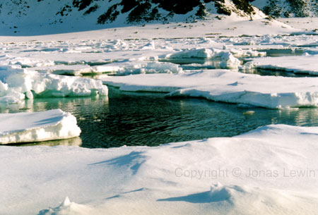
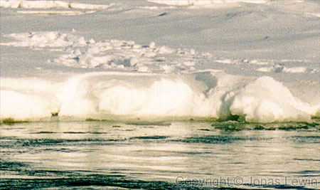
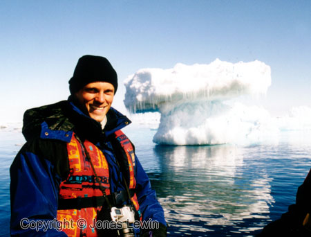

Ice.
|
When I'm taking this photo, I'm standing on the sheet of ice that you see in the foreground of the picture.
It's fairly far to land.
You
can see our footprints on the ice. The ice can form so different, and into so many wonderful shapes. Just like this shape. |
To find other pictures of Ice in Svalbard, go to the Photography menu.